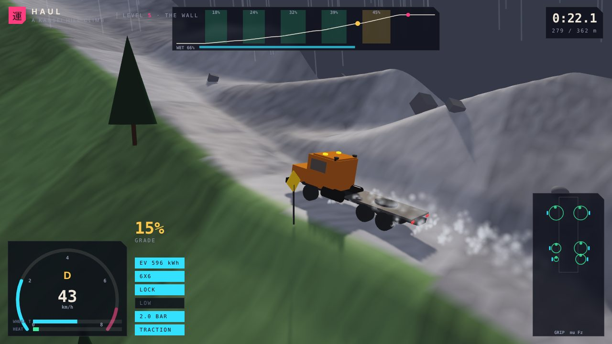
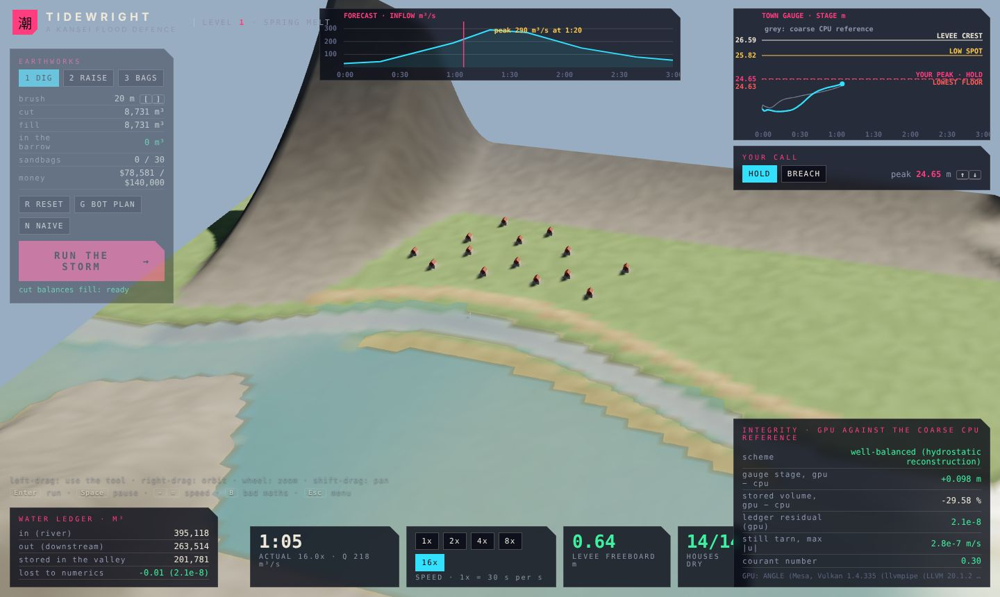
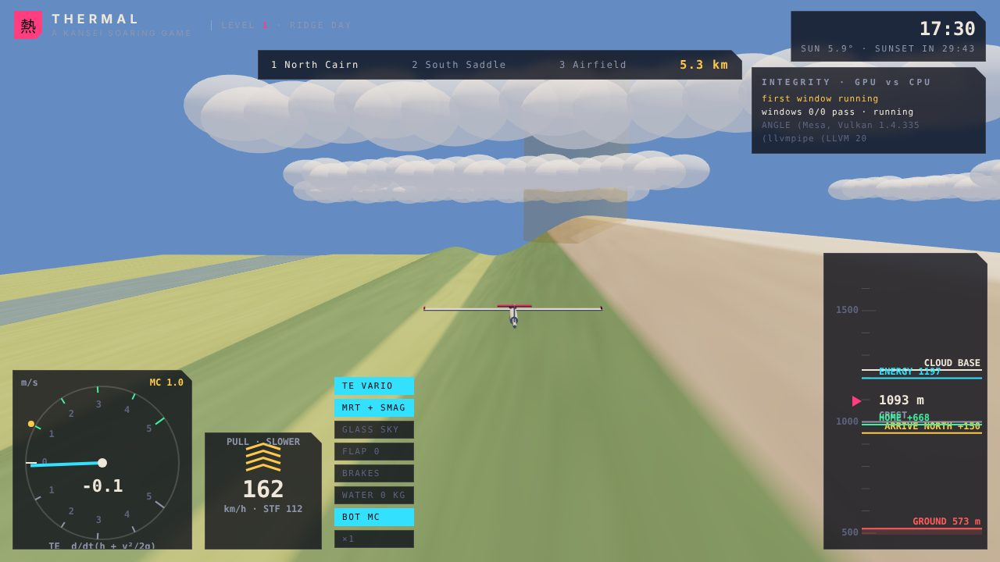
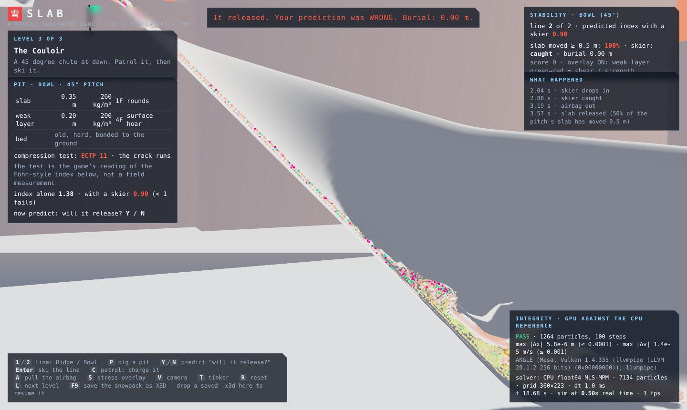

Each game's levels, vehicles and saves are X3D 4.0 files. PlayCanvas draws them, and a physics simulation reads the same bytes: no separate game format sits in between. Every number in the games is held to a gate that was committed before the first measured run, and each game shows a live INTEGRITY panel comparing its WebGL2 physics with a CPU reference.

A heavy 6x6, diesel or EV, hauls a loaded trailer up five mountain roads as the rain soaks the ground.
X3D: the truck, the trailer and every level (ElevationGrids with kansei:haul-level metadata) are X3D; the 240 Hz truck sim on Ammo drives on the terrain PlayCanvas draws.

A storm comes down the valley. Shape the land on an earth budget, call hold or breach, and keep the town dry.
X3D: the Spring Melt valley is an X3D level; the shallow-water solver (WebGL2, well-balanced) floods the bed it describes.

A sailplane has no engine. Read the sky, find air that rises faster than you sink, and run the ridge.
X3D: the ridge and the glider are X3D; a lattice Boltzmann atmosphere (D2Q9 MRT flow, D2Q5 heat) blows over the ridge the file describes.

Read the snowpack: dig a pit, predict, then ski the line or release it on purpose.
X3D: the mountain, the skier and every saved snowpack are X3D 4.0. Press F9 to save the snow as X3D; drop the file back in to resume.
src/game/x3d-pc.js, about 150 lines in each game) turns X3D 4.0 into PlayCanvas entities. It reads about 11 of X3D's ~260 node types today.tests/limits.json before its first measured run, and its docs list every change made after that run, with the reason.Run any game locally: cd <game>/v1 && npm start, then open http://127.0.0.1:8080 (no install, no build; Node 20+). Each game vendors PlayCanvas 2.24.3 (MIT); HAUL also vendors Ammo.js (zlib). Needs WebGL2 with float textures. Measured on 2026-11-28: gates with Node 23.7.0; live play in Chromium on an Apple M3. Phones, other GPUs and Safari are not measured.